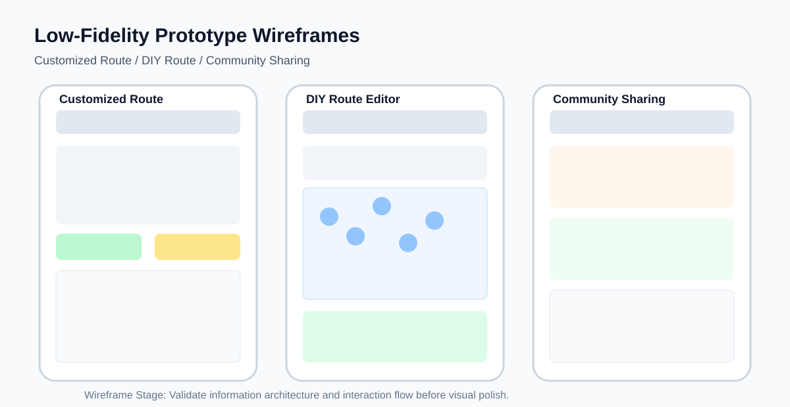
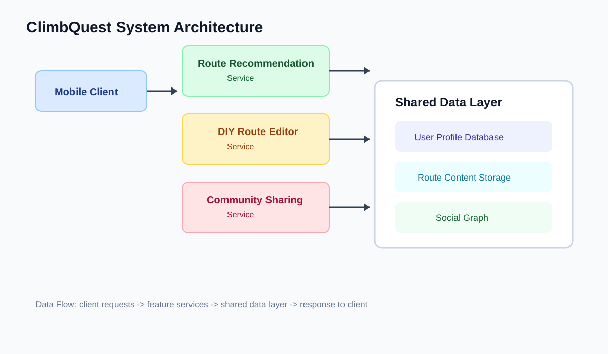
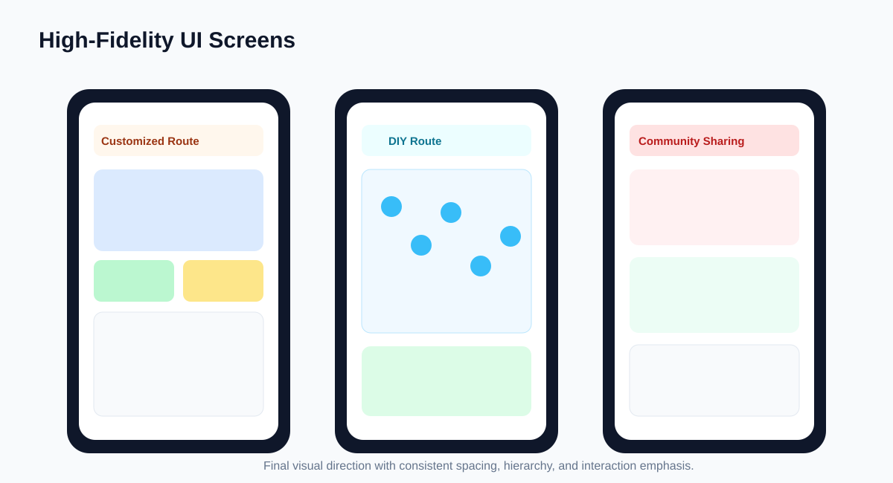

Prototype
System Design and Implementation
Prototype Overview
The ClimbQuest prototype is a mobile-first route service platform for indoor climbing users. The product workflow now focuses on three core experiences: customized route recommendations, DIY route creation, and community route sharing. The interface supports users from exploration to creation to social participation in a complete route lifecycle.
Low-Fidelity Prototype (原型图)
The wireframe prototype validates the key interaction paths of our three main functions before visual refinement.

Feature 1: Customized Route
Users receive route recommendations generated from their level, preferences, and training goals. The recommendation flow supports quick filtering by grade, wall area, and climbing style.
Feature 2: DIY Route Creation
Users can design and publish their own routes by selecting holds, defining sequence logic, and setting target difficulty. The editor supports easy iteration before submission.
Feature 3: Community Route Sharing
Users can share self-created routes to the community, view others' designs, and interact through likes, saves, and comments to build a collaborative climbing experience.
System Architecture (系统架构图)
The architecture connects the client app, route recommendation service, DIY route editor service, community interaction module, and a shared data layer for user profiles and route content.

High-Fidelity Prototype (高保真图片)
The high-fidelity design focuses on visual hierarchy, route readability, and mobile interaction efficiency for the three core features.

Technology Stack
Frontend: HTML, CSS, JavaScript
Design: Figma
Deployment: GitHub Pages
Repository: ClimbQuest GitHub Repository
Personal Contribution (个人贡献)
- Planned and documented the three core feature flows: customized route, DIY route, and community sharing.
- Produced and integrated low-fidelity wireframes, system architecture diagram, and high-fidelity interface visuals.
- Implemented and refined the prototype presentation page structure, content, and visual consistency.
- Connected design rationale with implementation details for coursework reporting and team communication.
Team Contributions
The following table outlines each team member's primary contributions to the project:
| Team Member | Student ID | Contributions |
|---|---|---|
| Member 1 | XXXXXXXX | User Research, Personas, Content Writing |
| Member 2 | XXXXXXXX | UI/UX Design, Figma Prototypes, Visual Hierarchy |
| Member 3 | XXXXXXXX | Frontend Development, HTML/CSS/JS Implementation |
| Member 4 | XXXXXXXX | Usability Testing, Evaluation, Iteration Documentation |